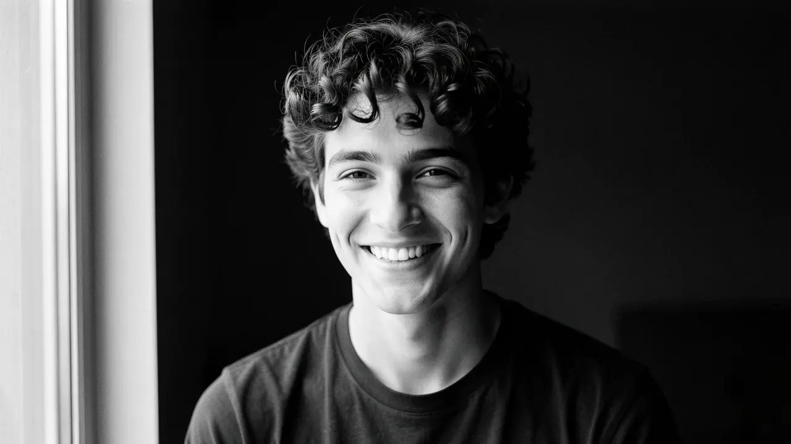
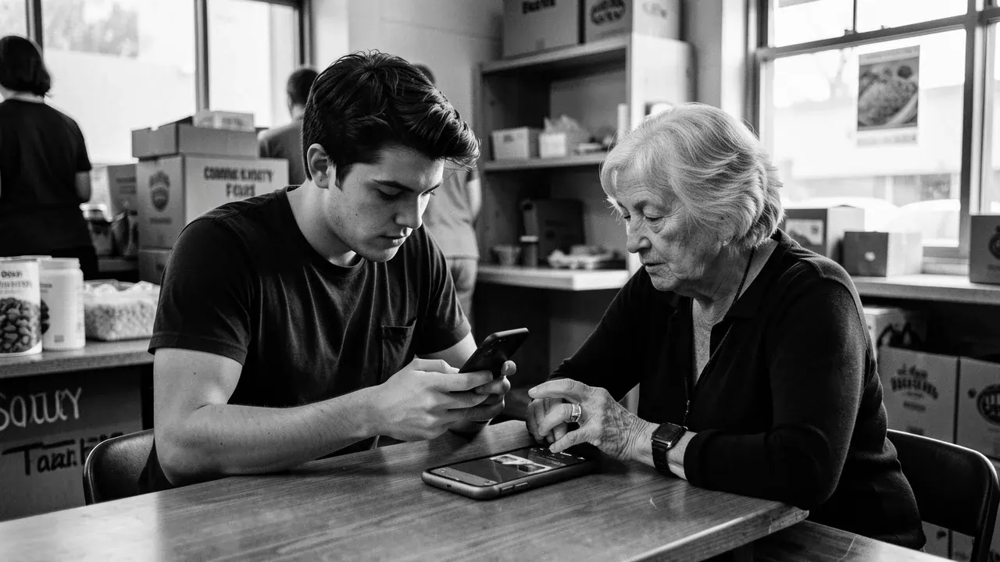
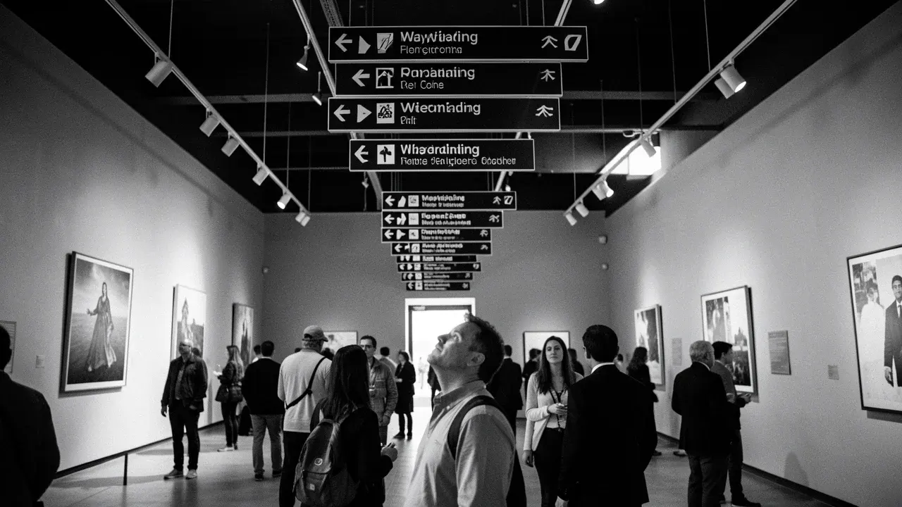
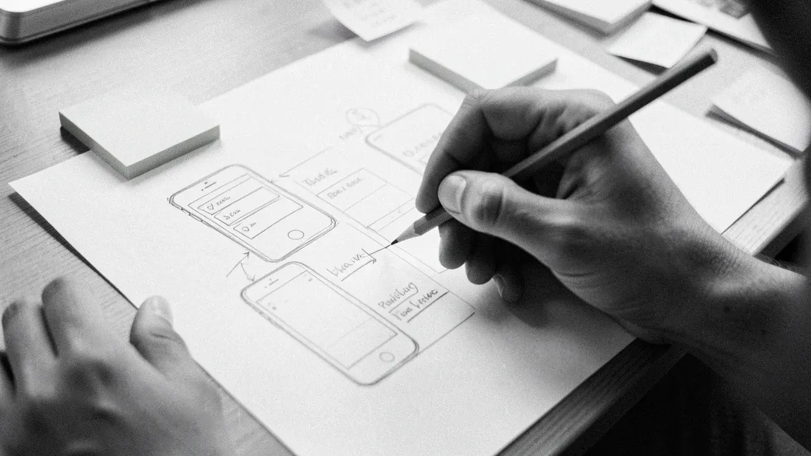
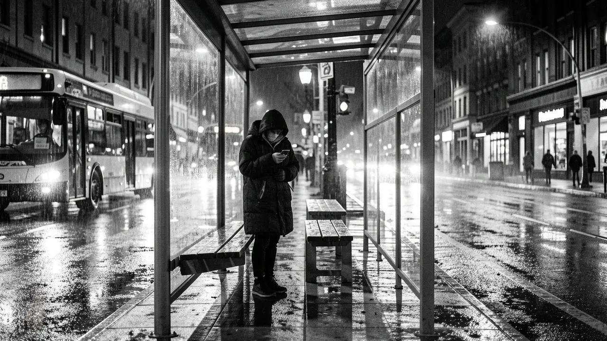
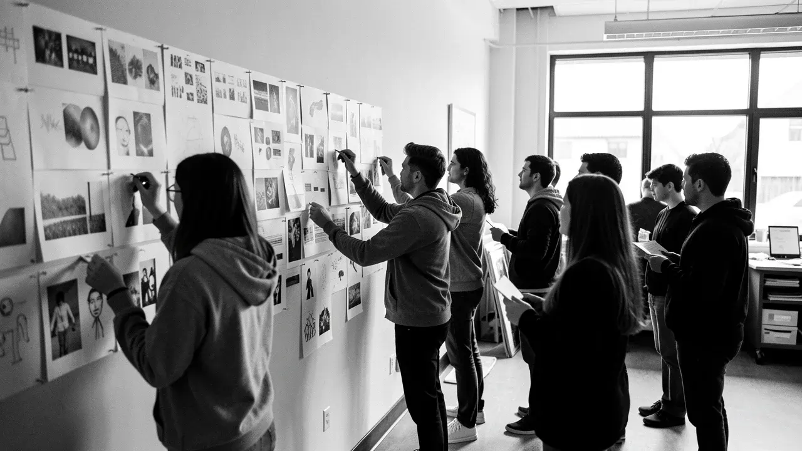

Tom Ashworth, UX/UI design student looking for a placement

Pantry Run
Food-bank stock app. Student project, UX and UI.
A phone app for food-bank volunteers to log what comes in and what goes out, so the shelves and the spreadsheet stop disagreeing. The brief was to make a first-time volunteer useful in their first shift.
I sat with a volunteer and a first-time user while they tried a clickable prototype, then cut the stock-in flow down to three taps.
What I did
- Interviews
- User flows
- Prototype in Figma
- Usability test

Find your way
Wayfinding for a city museum. Signs, floor maps and a visitor leaflet.
A signage system for a museum where visitors keep asking the front desk the same three questions: where is the toilet, where is the café, and how do I get out. The brief asked for something that works without a phone.
I mapped how people actually walk the galleries, then designed hanging signs, a floor map and a pocket leaflet that share one set of arrows and colours.
What I did
- Walk-through observation
- Sign hierarchy
- Arrows and icons
- Print layout

Paper first
Sketching and wireframes. A process piece.
How I get from a vague idea to something people can poke at. Fast sketches on paper, sticky notes for the flow, then low-fidelity wireframes in Figma only once the paper version makes sense.
This piece walks through that process on one screen from start to finish, including the versions I threw away.
What I did
- Crazy eights sketching
- Sticky-note flows
- Low-fidelity wireframes
- Design critique

Next bus, now
Live-times concept for night-time bus stops. Student project.
A concept for a live-times display at the stop itself, designed for someone waiting alone after dark who wants one answer fast: is my bus coming, and how long?
I designed the display for glare and rain, with large type, high contrast and a single line for the next bus, and kept the sample timetable data simple.
What I did
- Night-time site visit
- Display typography
- Contrast checks
- Interface states

Studio show
The pin-up wall and printed guide for our end-of-year show.
A group project: lay out forty-odd pieces of student work on one long wall so a visitor can read the room in a minute and still find the detail.
I worked on the wall plan, the numbering and the printed guide that matches it.
What I did
- Wall plan
- Numbering system
- Printed guide
- Working in a team
About
I design for the person in the queue.
I’m in the final year of a BA in Graphic and UX Design at a university in Leeds. I like problems with a real person attached: a volunteer sorting tins, a visitor lost in a gallery, someone at a bus stop at midnight.
I start on paper, test early with whoever I can find, and only then open Figma. I’m looking for a UX/UI placement where I can learn from a team, be useful quickly and keep asking good questions.
Skills
- User research basics
- Wireframing and prototyping
- Interaction design
- Wayfinding and signage
- Typography and layout
- Accessibility checks (WCAG)
Tools
- Figma and FigJam
- Adobe Illustrator
- Adobe InDesign
- Adobe Photoshop
- Pen, paper and sticky notes
- HTML and CSS, the basics
Contact
Looking for a placement?
tom@tomashworth.example- What I’m afterA UX/UI design placement.
- WhereBased in Leeds. Happy to meet in person or online.
- PortfolioCase-study detail and process work on request.